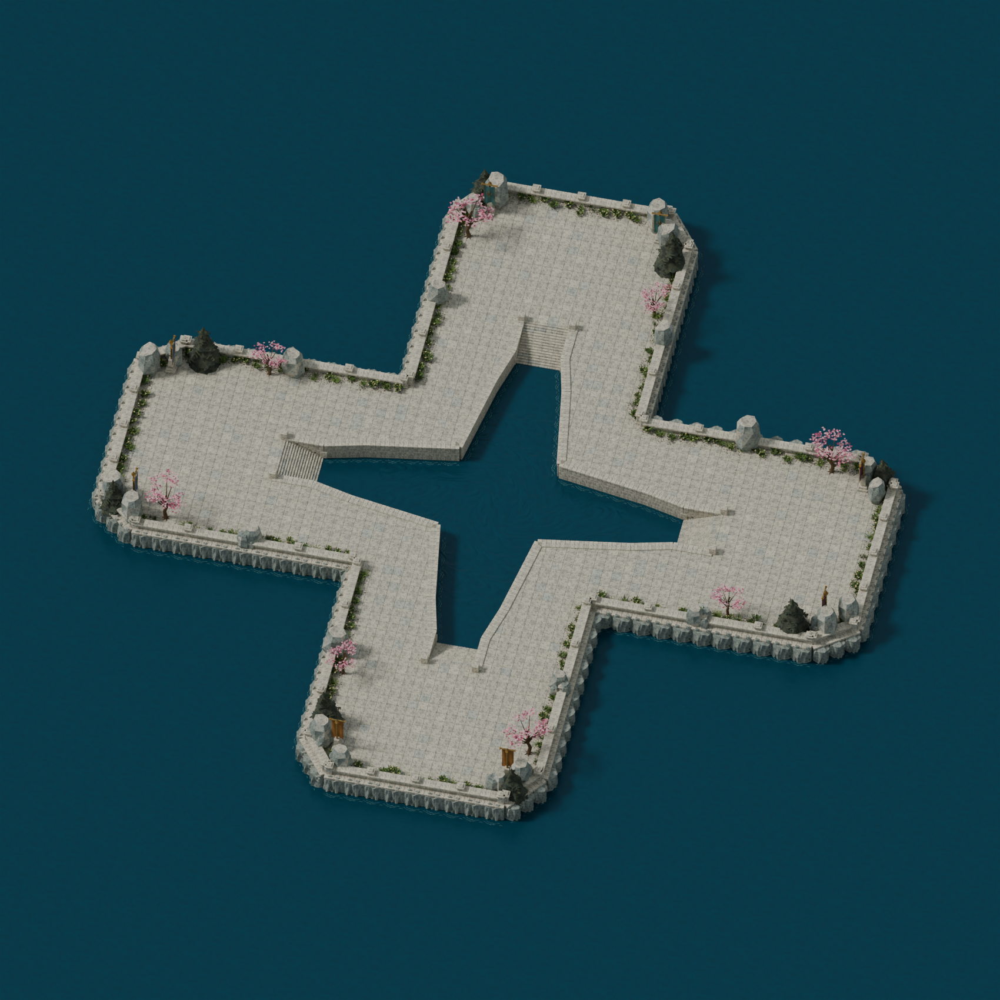
按用户四张参考图制作的可编辑场景。沿用金币练功房的石材做旧、法线与反射处理，新增岸壁湿润带、樱树及四色旗帜。水面使用独立材质与法线组合，未加入发光粒子。
布局与细节
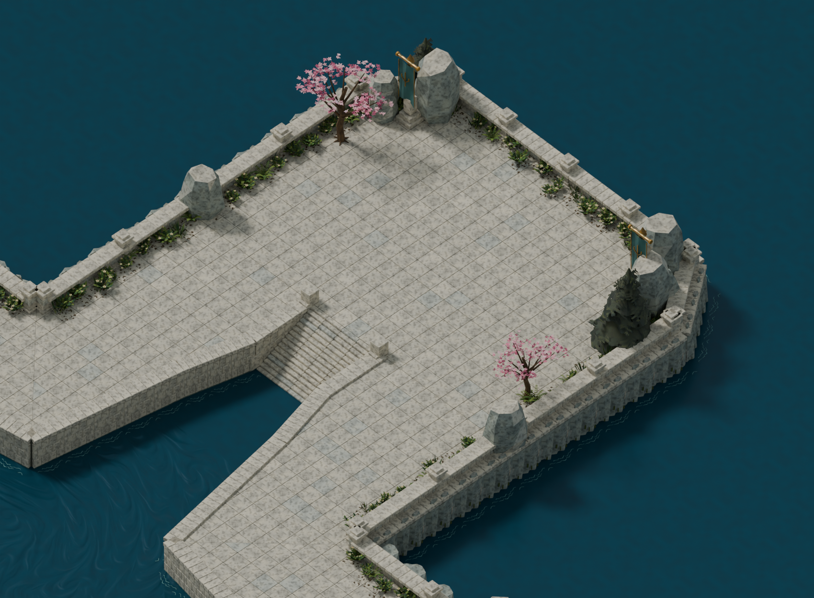
单侧组装样板，可旋转复用。
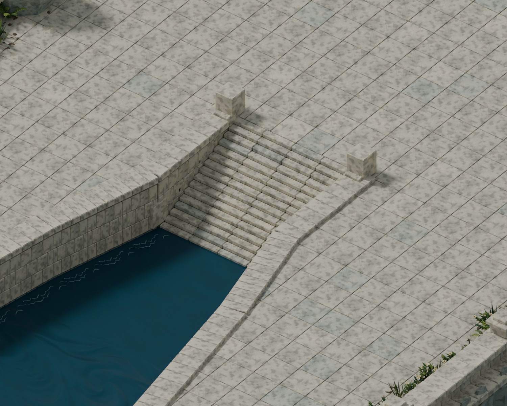
576 码宽，16 级踏步，平台与水域分别支撑。
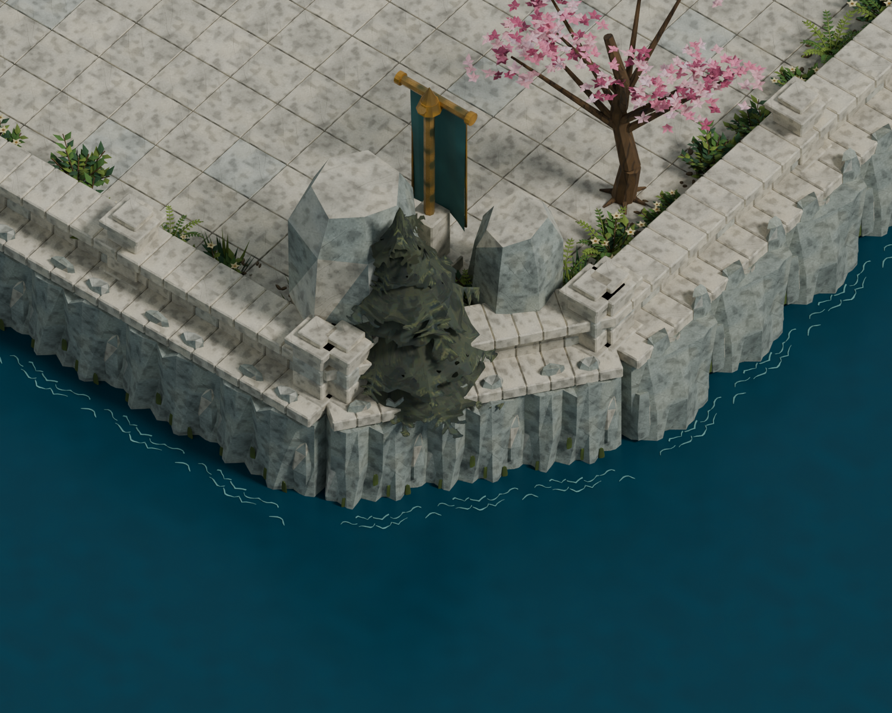
石板—压顶—岩壁—湿润水线，外围植被单独摆放。
Workshop 实机
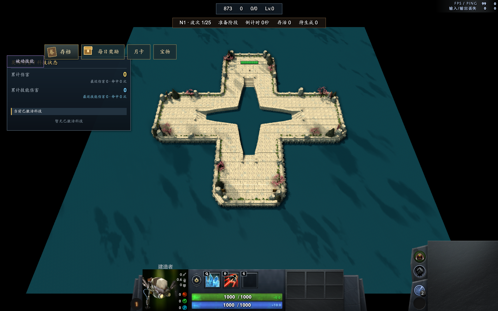
实际游戏截图，保留 HUD。建造者完成四方平台与中央之间 8 段行走。查看平台与阶梯近景 · 实机验证报告 · 编译资源检查
模块库
M18 为局部组装示范，对应玩家平台近景；其余组件可单独复用。不同旗色共用几何轮廓。
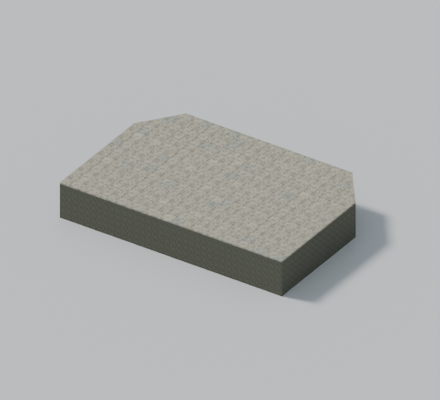
M01 玩家平台基体
m01_player_platform7,568 三角面
FBX 源文件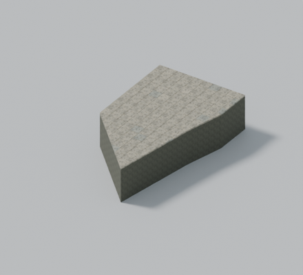
M02 连接通道 左
m02_arm_left2,624 三角面
FBX 源文件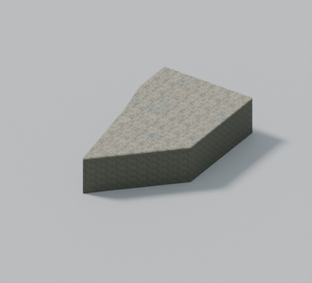
M02 连接通道 右
m02_arm_right2,624 三角面
FBX 源文件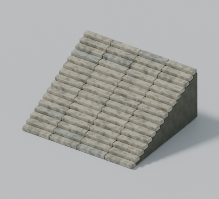
M03 迎敌阶梯 · 16 级
m03_stair_treads4,020 三角面
FBX 源文件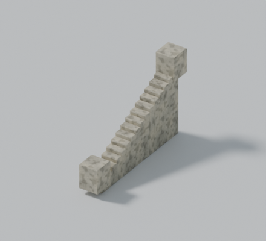
M03 阶梯侧帮 -1
m03_stair_cheek_left2,040 三角面
FBX 源文件M03 阶梯侧帮 1
m03_stair_cheek_right2,040 三角面
FBX 源文件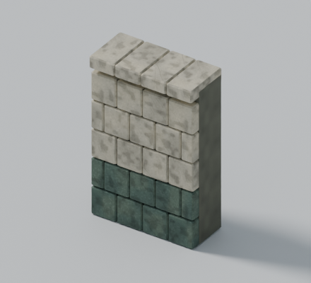
M04 内岸直墙
m04_inner_bank_2561,572 三角面
FBX 源文件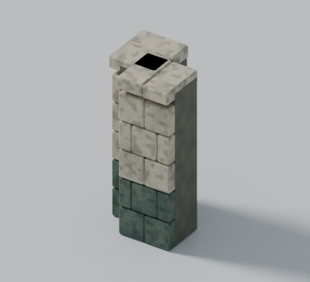
M05 内岸折角 -1
m05_bank_concave1,704 三角面
FBX 源文件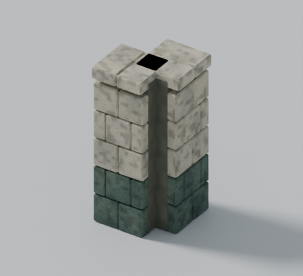
M05 内岸折角 1
m05_bank_convex1,704 三角面
FBX 源文件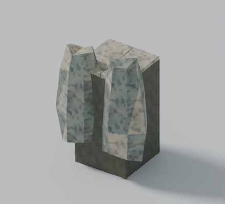
M06 外岸转角基体
m06_outer_corner196 三角面
FBX 源文件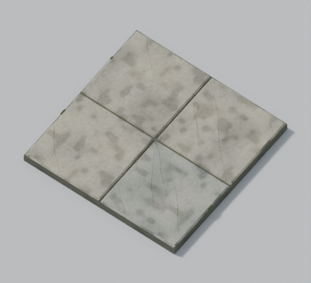
M07 干净地坪
m07_paving_clean288 三角面
FBX 源文件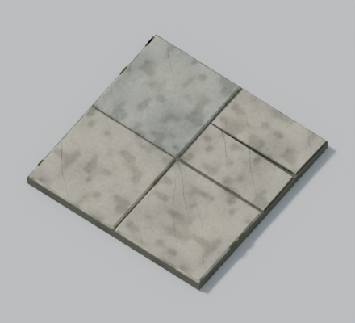
M07 轻磨损地坪
m07_paving_worn324 三角面
FBX 源文件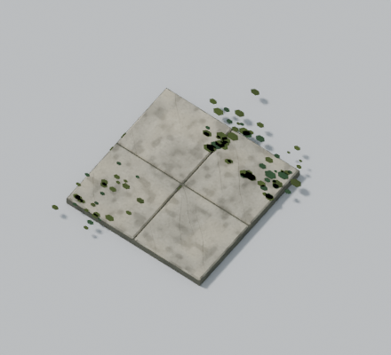
M07 边缘苔痕地坪
m07_paving_moss2,088 三角面
FBX 源文件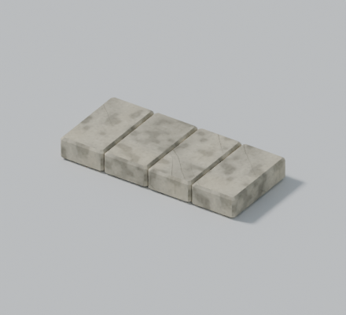
M08 岸沿压顶 straight
m08_coping_straight240 三角面
FBX 源文件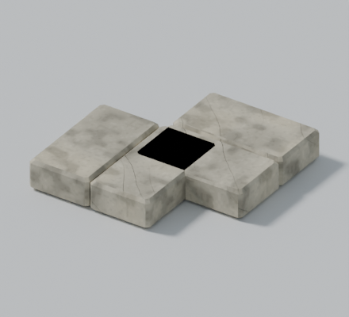
M08 岸沿压顶 corner
m08_coping_corner240 三角面
FBX 源文件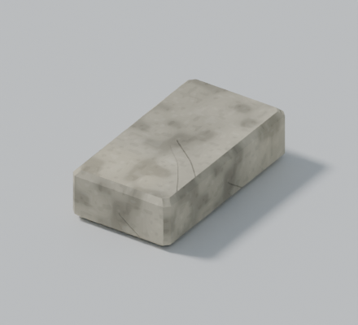
M08 岸沿压顶 end
m08_coping_end60 三角面
FBX 源文件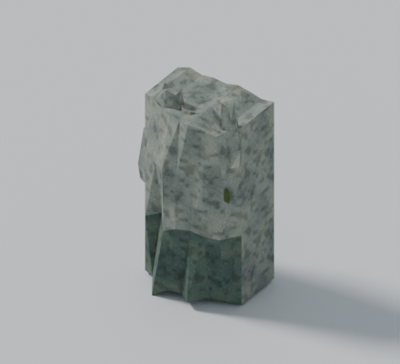
M09 外岸岩壁 straight
m09_cliff_straight816 三角面
FBX 源文件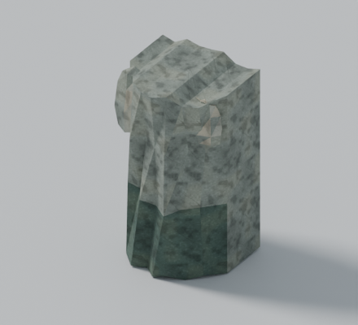
M09 外岸岩壁 bulge
m09_cliff_bulge816 三角面
FBX 源文件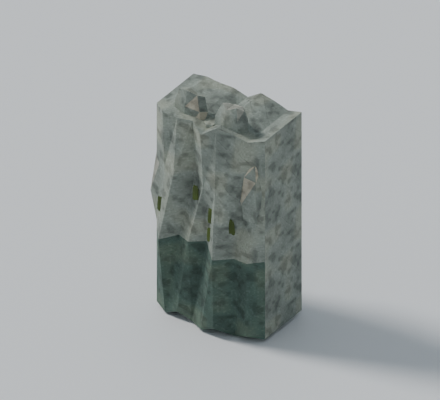
M09 外岸岩壁 recess
m09_cliff_recess816 三角面
FBX 源文件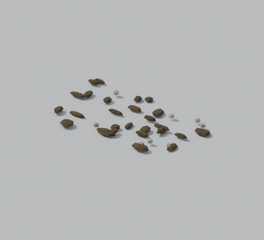
M10 石土草过渡 dry
m10_transition_dry1,976 三角面
FBX 源文件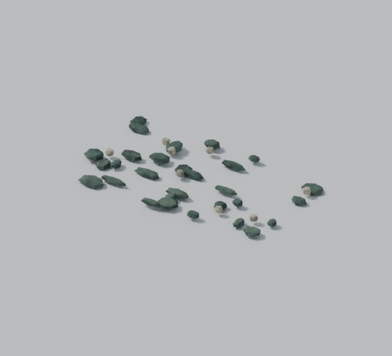
M10 石土草过渡 wet
m10_transition_wet1,976 三角面
FBX 源文件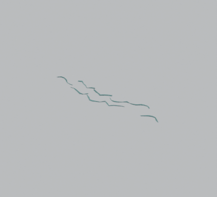
M11 岸线碎沫
m11_shore_foam468 三角面
FBX 源文件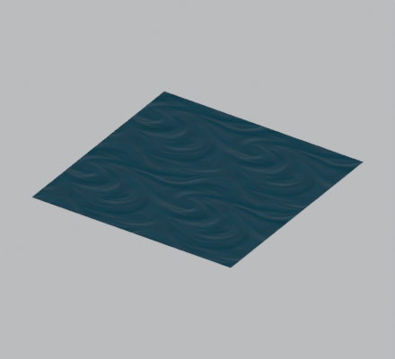
M12 深蓝水面模块
m12_water_tile2 三角面
FBX 源文件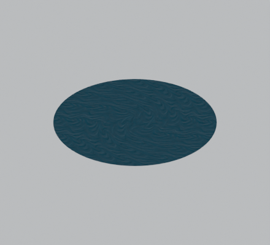
M12 中央缓涡水面
m12_vortex_surface4,992 三角面
FBX 源文件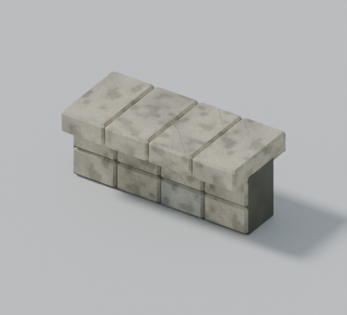
M13 外边界矮墙
m13_lowwall_256732 三角面
FBX 源文件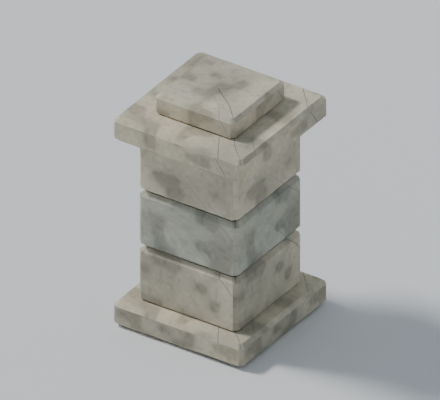
M13 边界短柱
m13_short_post360 三角面
FBX 源文件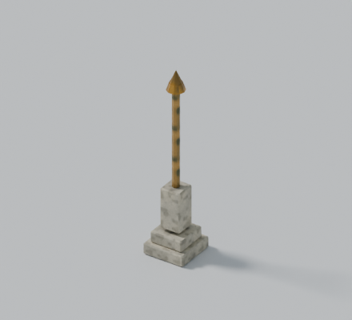
M14 独立旗杆
m14_banner_post262 三角面
FBX 源文件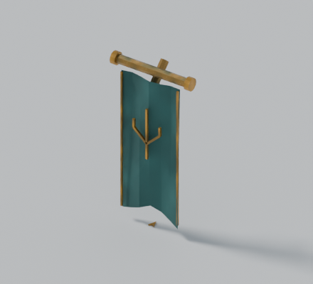
M14 玩家旗帜 teal
m14_flag_teal336 三角面
FBX 源文件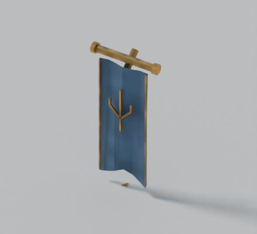
M14 玩家旗帜 blue_cloth
m14_flag_blue_cloth336 三角面
FBX 源文件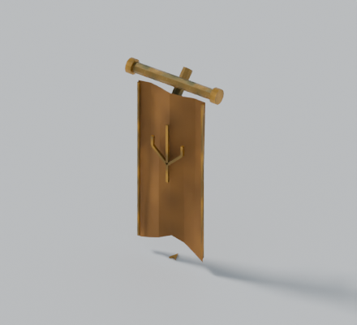
M14 玩家旗帜 ochre_cloth
m14_flag_ochre_cloth336 三角面
FBX 源文件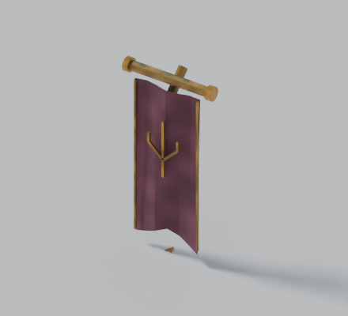
M14 玩家旗帜 rose_cloth
m14_flag_rose_cloth336 三角面
FBX 源文件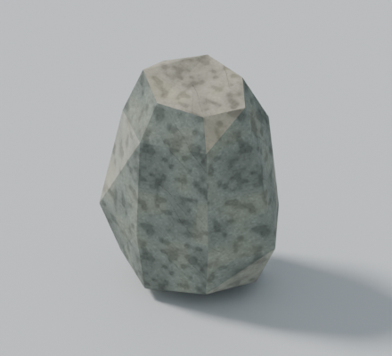
M15 岩石 1
m15_rock_152 三角面
FBX 源文件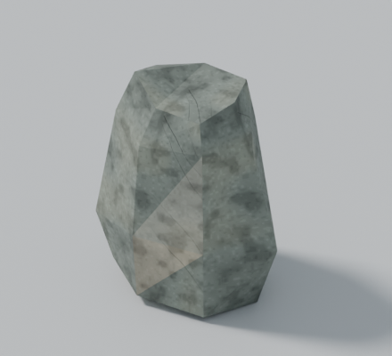
M15 岩石 2
m15_rock_252 三角面
FBX 源文件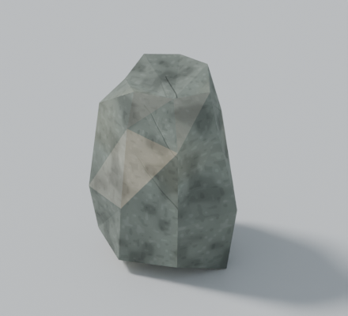
M15 岩石 3
m15_rock_352 三角面
FBX 源文件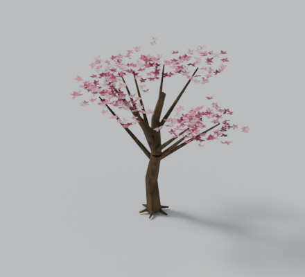
M16 疏朗樱树 1
m16_cherry_16,960 三角面
FBX 源文件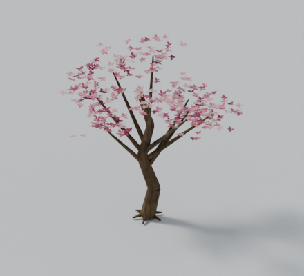
M16 疏朗樱树 2
m16_cherry_26,960 三角面
FBX 源文件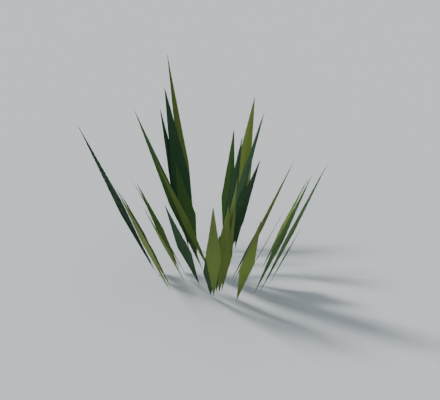
M17 边缘地被 grass
m17_grass144 三角面
FBX 源文件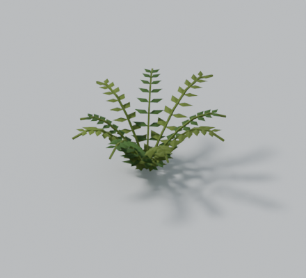
M17 边缘地被 fern
m17_fern1,188 三角面
FBX 源文件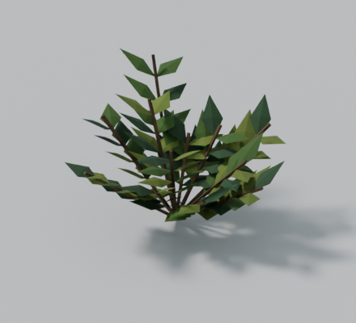
M17 边缘地被 shrub
m17_shrub528 三角面
FBX 源文件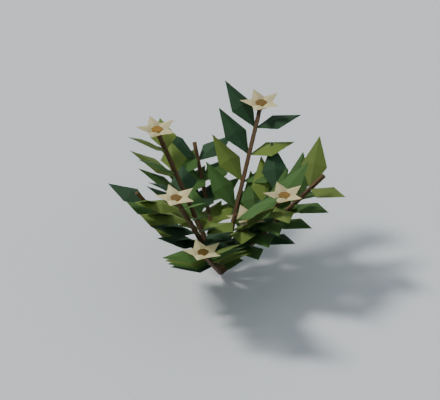
M17 边缘地被 flowers
m17_flowers792 三角面
FBX 源文件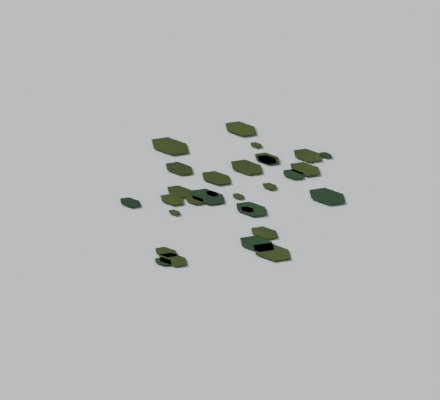
M17 边缘地被 moss
m17_moss600 三角面
FBX 源文件在项目中使用
Blender 贴图已打包。Hammer 模型位于 models/main_island/，源地图及预制件已同步到项目 content 目录。新场景以世界原点为中心，平台高 640、水面高 400；正式主岛原中心为 (-1152, 2688)，可整体平移后继续编辑。
外围边界保持封闭，中央水下另有浅层行走支撑，以延续现有迎敌路线。预制件包含支撑与命名标记。正式主地图的替换、玩家出生点重绑及完整战斗联调尚未进行。